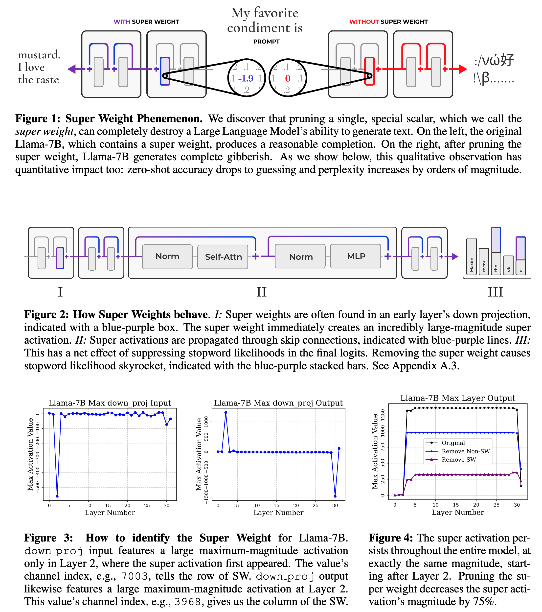
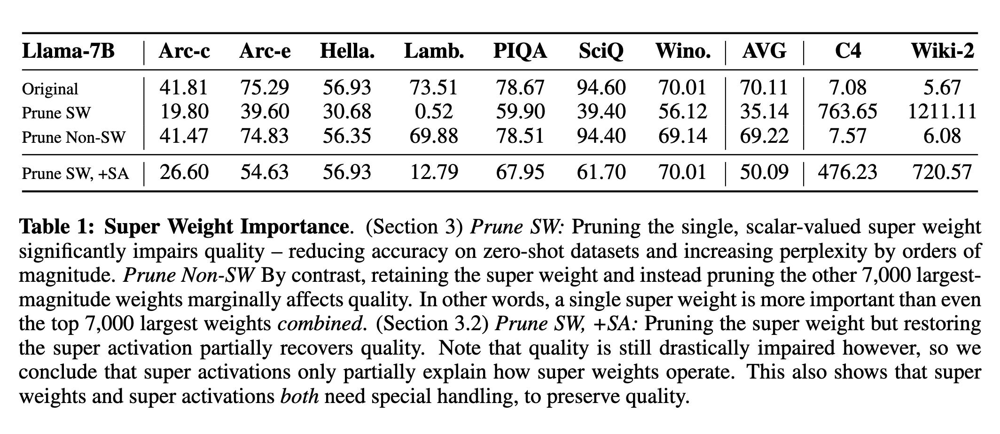
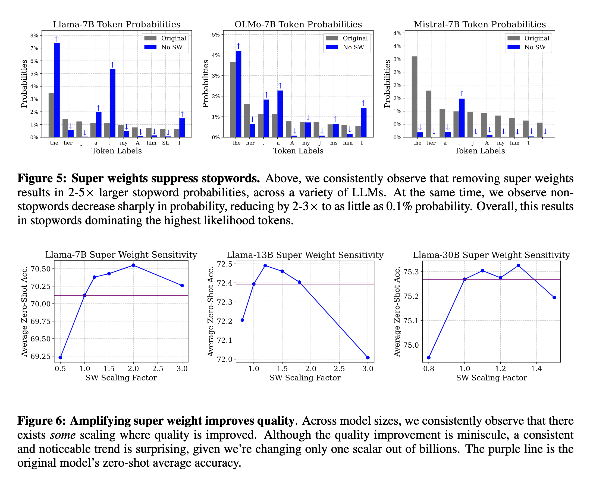
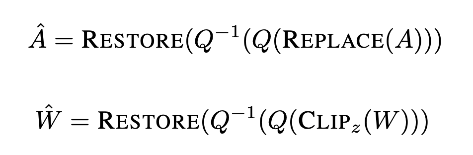

The Super Weight in Large Language Models
papers
summary
research
LLMs
A few papers in the past showcased that at a certain scale, a small set of hidden state features contains outliers with enormous magnitude. These outliers account for a small percentage of all activations but are crucial for preserving the compressed model quality.
This paper from Apple takes that finding to the extreme, claiming that a tiny subset, at most six scalers, is more important than the rest of the others. The authors call them super weights, and pruning them destroys model quality.

Super weights create super activations
- The paper Massive Activations in Large Language Models showcased that LLMs contain massive activations that persist across many layers at the same position irrespective of the input. These activations have a constant magnitude and are crucial to the model’s performance.
- The authors observed another interesting thing, i.e., the activation channel of these massive activations aligns with the channel of the super weights. To validate if both are related, the authors prune the super weight and check its effect on the magnitude of these activations.
- They found that pruning the super weight reduces the magnitudes of these activations drastically. Hence, these activations are created by the super weight. They term these massive activations as super activations.
Identifying super weight by activation spikes
- Given the findings in the above section, the authors hypothesize that super weight can be located by detecting the spikes in the input-output distributions of
down_projacross the layers. This detection only requires a single input prompt rather than a set of validation data or use-case examples. - Suppose X is the input with dimensions (L x H), and the weight matrix of the
down_projis W with dimensions (D x H). We can then compute output Y as Y= X WT. If Yij is a super activation, and Xik and Wik are outliers, we can say that Yij ≈ Xik Wjk. We can then identify the row from the super weight from the channel index given by the input distribution of the activations across all layers. Similarly, we can identify the column of the super weight from the channel index of the corresponding layer in the output distribution of the activations. - The authors found that the Phi-3-mini-4k-instruct contains the maximum number of super weights, a total of six.
- The authors also found that super weights in the instruct-tuned models are located at the exact coordinates as in the pre-trained models, suggesting that instruct fine-tuning does not change the position of super weights.
What impacts the model’s quality more: Super weights or super activations?
- Experimented with three conditions:
- Original model
- Prune the super weight (setting it to zero)
- Prune the super weight but restore the super activation
- When the authors prune the super weight, it significantly impairs quality - reducing accuracy on zero-shot datasets and increasing perplexity by orders of magnitude.
- Pruning the super weight but restoring the super activation recovers the quality partially but only up to a (low) extent. It suggests that the super weight and super activation need special handling to preserve quality.

Effect of super weight on the output token probability distribution
- So, what happens to the output of an LLM when you remove the super weight? The probability of generating the stopwords amplifies.
- If super weights are so important, why don’t we amplify them more? The authors multiply the super weights by a scaling factor ranging from 0.0 to 3.0 to record the impact on the model performance. They noticed that even though the improvements are minuscule, there exists a consistent trend of improvement to a certain scaling factor.

Weight and Activation Quantization
Given that we know the importance of the super activation and super weights, how should we quantize these?
- Activation Quantization
- Simulate W8A8 quantization with FP16 arithmetic and focus solely on addressing one critical activation outlier. Experiments done using round-to-nearest quantization but with some modifications.
- Replace the super activation with the median value (REPLACE), quantize (Q), and dequantize (Q−1) activations. Then restore the super activation in fp16 (RESTORE)
- Weight Quantization
- Proposed a simple method to improve INT4 quantization with large block sizes.
- Identify the super weight as described in the previous section. Clip the outlier weight, including the super weight, to improve the inlier fit.
- Quantize (Q) and dequantize (Q−1) the clipped weights. Restore the half-precision super weight after dequantization (RESTORE)
